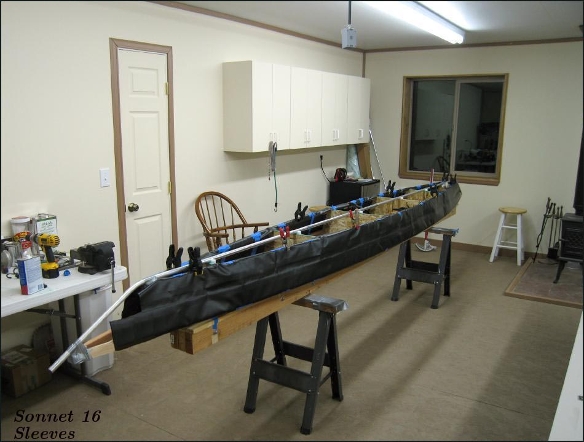

| Sonnet 16 | Menu Previous Page Next Page |
|

The sponson sleeves are temporarily taped to the gunwales and chines of the skinning frame. The gap line between the sponsons is centered between the stringers. Vinyl cement will be applied to the sleeves and to the inside of the skin. When dry, the skin will be placed over the sleeves and heat will be applied to the outside of the skin to reactivate the glue. The sleeves will become a permanent part of the skin which will later be removed from the skinning frame along with the aluminum keel and stems.
|
|